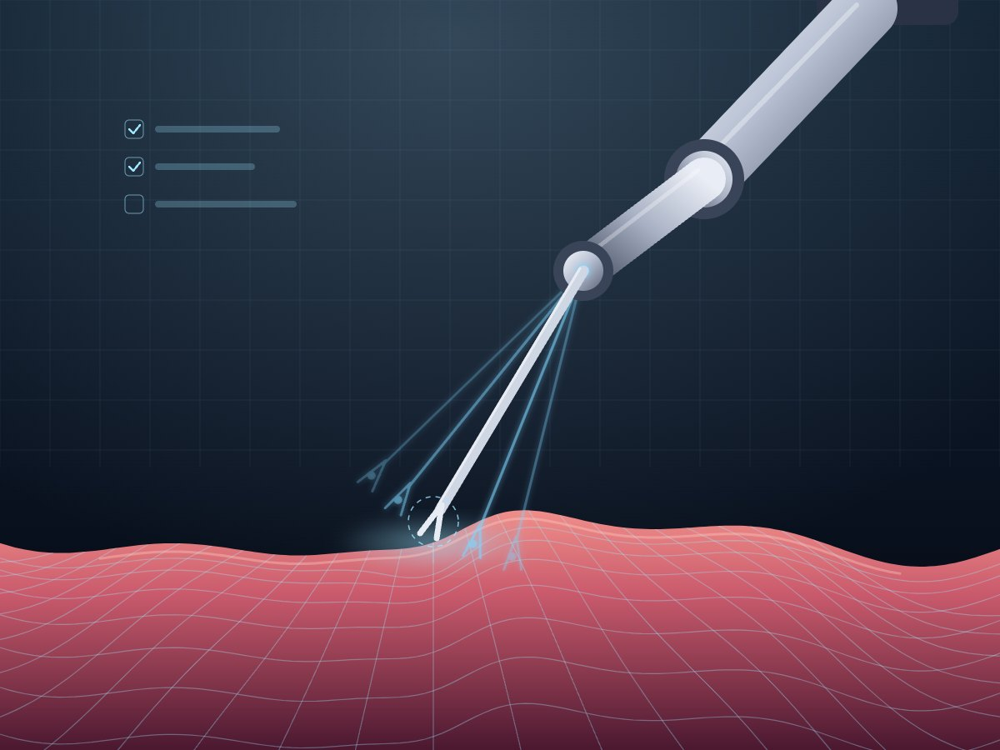
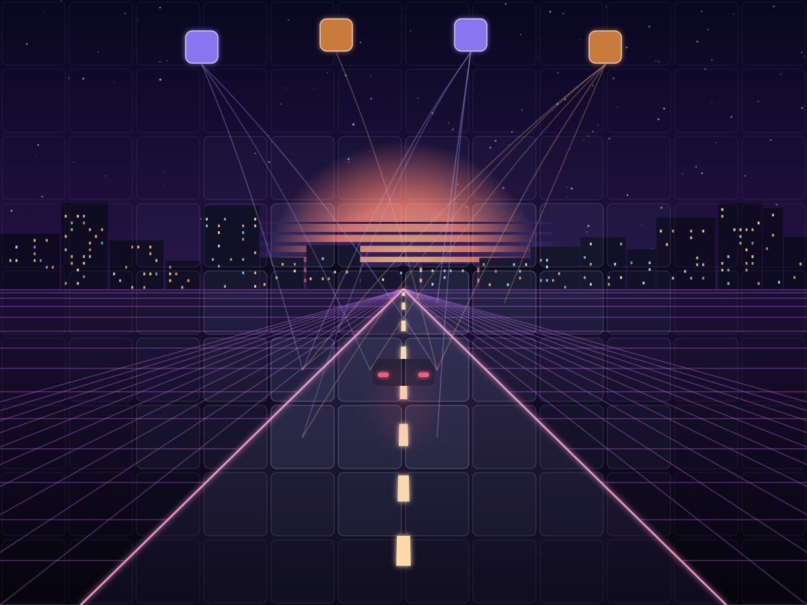
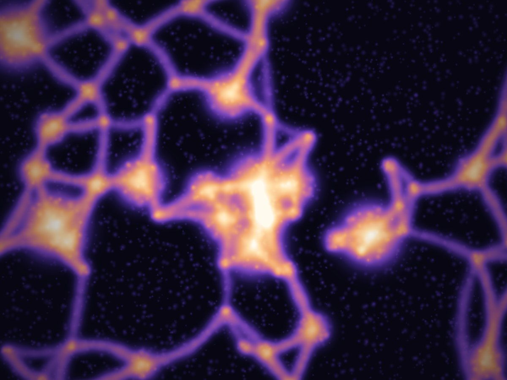

Projects
Research projects
World models, generative models and NeuroAI — with EPFL labs, CERN and NVIDIA. Click a project for the details.
-

BRAIN Project
- Objective
- Reconstruct the image or sound a person perceives from non-invasive EEG recordings — highly noisy, subject-dependent time series — in real time.
- Result
- End-to-end EEG-to-image demo with <1 s latency, retaining ~70% performance with only 25% of the data and 1/5 of the training time for subject adaptation.
- EEG
- Foundation models
- LoRA
- CLIP / CLAP
- NeuroAI
-

Evaluation Suite for Surgical Robot World Models
- Objective
- Measure whether surgical robot world models follow the commanded actions and produce biomechanically plausible tissue behaviour.
- Result
- Evaluation suite applied to NVIDIA Cosmos 3 to guide model development (ongoing).
- World models
- Evaluation
- Robotics
- NVIDIA Cosmos
-

Improving Attention in Egocentric World Models
- Objective
- Replace full attention in diffusion world models for egocentric driving with efficient alternatives such as register-token attention (à la VGGT-Omega).
- Result
- Ongoing — targeting reduced training and inference time.
- World models
- Diffusion
- Attention
- Autonomous driving
-
ATLAS Project
- Objective
- Accelerate Geant4-based Monte Carlo calorimeter simulation for the LHC with generative ML.
- Result
- Results close to established SOTA while using less memory, using Stochastic Interpolants (low-res) and a consistency-distilled EDM model (high-res).
- Generative models
- Stochastic interpolants
- Consistency distillation
- Particle physics
-

Dark Matter Density Generation
- Objective
- Generate dark matter galaxy cluster density maps directly from physical parameters.
- Result
- Simulation time cut from 5–7 days to minutes, with 0.8–1.0 cross-correlation at large scales and a near-zero log-PSD ratio across all frequencies.
- Diffusion Transformer
- Flow matching
- AstroPT
- Contrastive learning
- Astrophysics